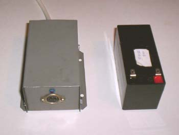
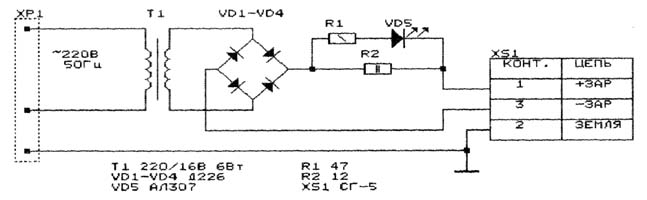
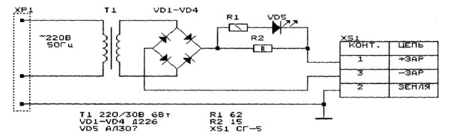

Устройство для зарядки свинцово-кислотных герметизированных аккумуляторов 12.6 вольт 1.2 А ∙ час

Назначение
Устройство предназначено для зарядки свинцово-кислотных герметизированных аккумуляторов напряжением 12.6 вольт емкостью 1.2 А ∙ час в составе различных приборов или по отдельности, а также может использоваться в качестве сетевого источника питания.
Технические характеристики:
Схема устройства:

Рис. 1. Схема электрическая принципиальная устройства для зарядки одного аккумулятора.

Рис. 2. Схема электрическая принципиальная устройства для зарядки двух последовательно включенных аккумуляторов.
Зарядное устройство включается в сеть переменного тока 220 В 50 Гц. Трансформатор T1 используется для гальванической развязки, чтобы обеспечить возможность работы устройства в качестве блока питания. В схеме для зарядки одного аккумулятора напряжение вторичной обмотки трансформатора T1 равно примерно 16 В (действующее значение). В схеме для зарядки двух последовательно включенных аккумуляторов напряжение вторичной обмотки трансформатора T1 примерно вдвое выше. Выпрямленный с помощью диодного моста VD1 зарядный ток подается на заряжаемый аккумулятор через резистор R2, сопротивление которого вместе с внутренним сопротивлением вторичной обмотки трансформатора определяет величину зарядного тока. Посредством светодиодного индикатора VD5, включенного через токоограничительный резистор R1, за счет падения напряжения на резисторе R2 можно проконтролировать работу устройства. Резистор R2 также предназначен для защиты диодного моста при неправильном подключении аккумулятора. Заряжаемый аккумулятор (или два последовательно включенных аккумулятора) подключается к зарядному устройству с помощью разъема.
31.08.2006
15.10.2007
Альтернативные источники
энергии
Компьютеры и
Интернет
Магнитные поля
Механотронные системы
Перспективные
разработки
Электроника и технология